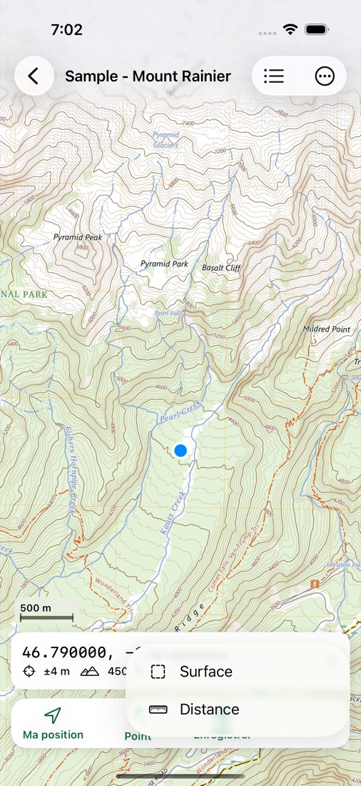
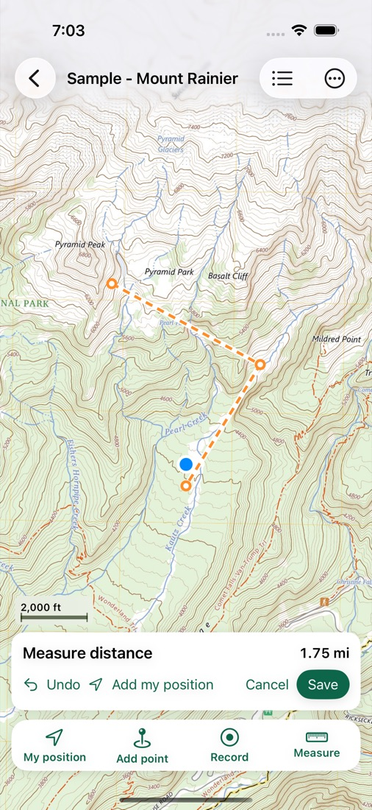
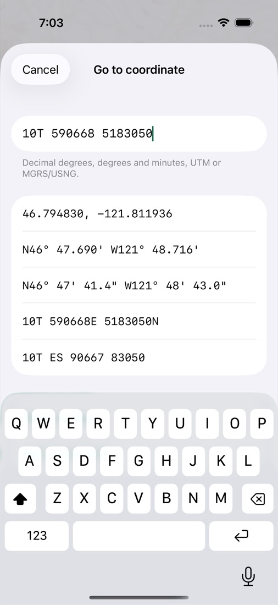

Vos cartes, hors ligne, avec vous dessus.
Ouvrez un plan de bloc, une carte de feu ou une carte topo — tout PDF géoréférencé ou GeoTIFF — et Mapsheet affiche votre position, sans réseau. Ajoutez des points avec photos, enregistrez des traces, mesurez des surfaces et envoyez des cartes à toute votre équipe d'un coup.
Bientôt sur l'App Store
Ce que fait Mapsheet
Vos cartes, de partout
PDF géoréférencés d'ArcGIS, QGIS, Global Mapper, RNCan et l'USGS (fichiers GeoPDF® compris) et GeoTIFF. Atlas de plusieurs pages, pages pivotées et téléchargements zippés.
Vous sur la carte
Position GPS, précision et direction sur la carte, même en mode avion. Les récepteurs GNSS Bluetooth jumelés dans iOS fonctionnent d'office.
Points, traces, surfaces
Points avec notes et photos, traces qui continuent avec l'écran verrouillé, lignes et surfaces mesurées en mètres, hectares ou acres.
Marcher vers un point
Distance et azimut entre vous et n'importe quel point — un centre de parcelle, une cache, un coin de bloc.
Les coordonnées des équipes
Lat/long, degrés-minutes, UTM et MGRS/USNG — affichées et saisies. Systèmes provinciaux intégrés : Albers C.-B., 10TM Alberta, MTM, Lambert Québec.
Paquets d'équipe
Le chef d'équipe envoie plusieurs cartes, points et photos en un seul fichier par AirDrop ou message. L'équipe l'ouvre gratuitement; les nouveaux points s'ajoutent aux siens.
Aperçu



Forfaits
Gratuit
- Jusqu'à 3 cartes
- GPS, points, traces, mesures
- Exportation GPX, KML et CSV
Terrain
- Cartes illimitées
- Usage professionnel inclus — sans licence pro à part
- Ou 9,99 $ US / mois pour le travail saisonnier
Équipe
- Tout ce qu'offre Terrain
- Envoyez des cartes à votre équipe en paquets
- Votre équipe ouvre les paquets gratuitement
Prix américains; l'App Store affiche le prix en dollars canadiens. Deux semaines gratuites sur les forfaits annuels pour les nouveaux abonnés.
Questions et aide
Quelles cartes fonctionnent?
Les PDF géoréférencés (y compris les fichiers GeoPDF®) et les GeoTIFF, aussi dans un zip. Un simple PDF sans coordonnées ne peut pas afficher votre position.
Faut-il du réseau?
Non. Les cartes sont sur votre téléphone et le GPS fonctionne partout où le ciel est visible.
Puis-je l'utiliser au travail?
Oui, avec tous les forfaits. Mapsheet ne facture pas de supplément pour l'usage professionnel.
Comment mettre des cartes sur mon téléphone?
Partagez le fichier vers Mapsheet depuis Mail, Fichiers, Drive ou AirDrop, ou touchez + dans la liste des cartes. Votre chef d'équipe peut envoyer un paquet d'équipe.
Mes données sont-elles partagées?
Non. Cartes, points, traces, photos et position restent sur votre appareil. Pas de compte, pas de serveur. Voir la politique de confidentialité.
Toujours bloqué? Écrivez à laddothis at gmail dot com en décrivant ce qui s'est passé et votre appareil. Réponse en moins d'un jour.